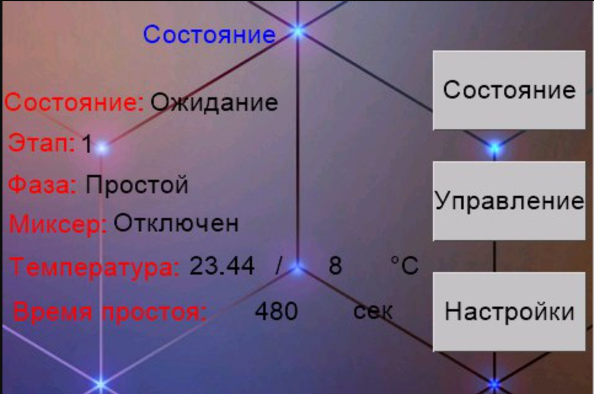

Прошивка для пивоварни
C
ESP32
Nextion
IoT

Описание проекта
Цель проекта заключается в создании прошивки для аппаратного устройства на базе ESP32 с возможностью установки временного и температурного режимов для варки пива. Было разработано программное решение со следующими функциями:
- Алгоритм поддержания заданной рабочей температуры
- Удобный веб интерфейс
- Удобный интерфейс на сенсорном дисплее Nextion
- Телеграм бот для просмотра статуса и дистанционного управления
- Сохранение режимов варки пива и кипячения
- Отслеживание статуса системы и своевременное реагирование на возможные неполадки